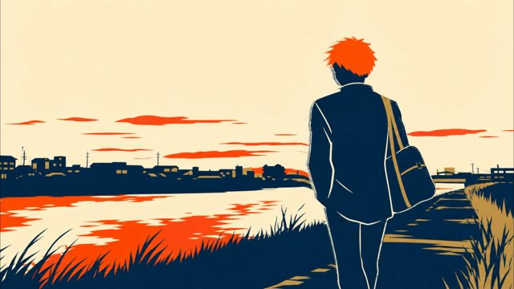
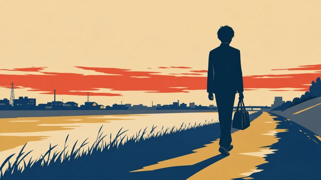
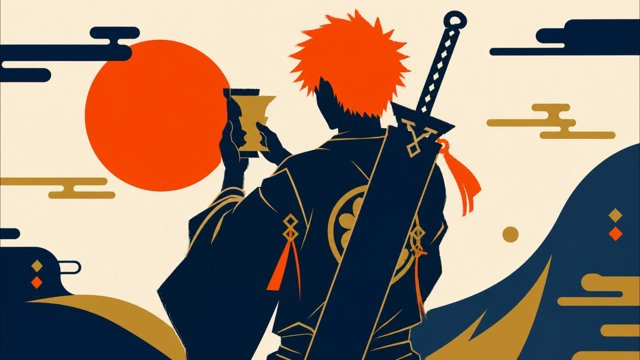
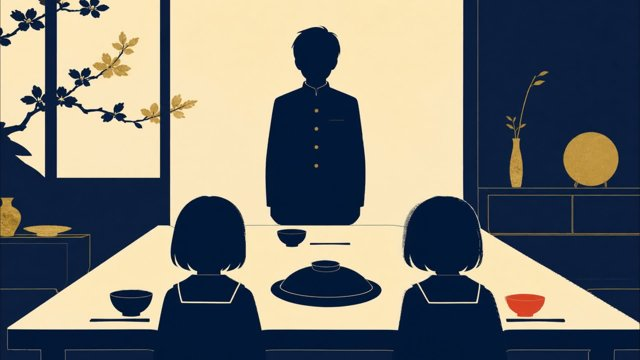
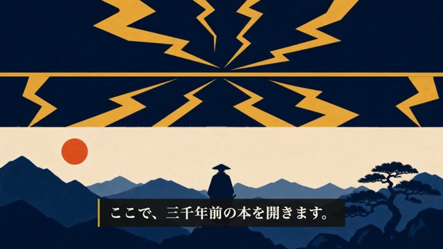
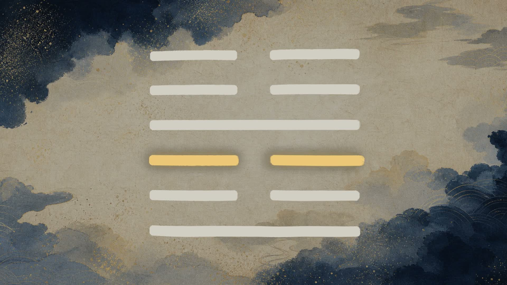

releases/057/ep37_shin.mp4 より均等33分割抽出。黒フレーム・字幕欠落・大きな映像崩れは見当たらず。上記ブロッキング①（オレンジ髪カット）と②（GUA6プレースホルダー文字）はこの中に写り込んでいます。
コンタクトシート目視 → タイムスタンプ→シーンID逆引き → ソース画像とmtime比較で原因まで特定済み。台本・タイトル・機械ゲートは別として、この2点は直さないと現行mp4を公開できません。
未反映 依頼の前提（TL;DR）は「13枚再生成・ブラインド監査12/12不明でPASS」でしたが、これは静止画PNGに対する検証だけでした。実際に releases/057/ep37_shin.mp4 に焼き込まれている映像（DepthFlowモーションmp4）は、そのうち11カットが再生成前の古い素材のままで、オレンジの逆立った髪・巨大な包帯巻きの刀（斬月）・黒い死覇装が今もはっきり映っています。
原因：画像修正は content/057/visuals/*.png（16:57〜17:02生成）止まりで、その先の DepthFlow モーション中間ファイル content/057/visuals_mp4/*.mp4 が再生成されていません。新規追加の2カット（V_02_08・V_04_06）だけは新しいpngから作られていますが、既存11カット（V_02_01, V_02_02, V_02_03, V_02_04, V_02_06, V_02_07, V_03_01, V_03_02, V_03_03, V_04_04, V_07_01）の visuals_mp4 は7/11 07:36〜07:40のまま＝pngの再生成（7/12 16:57〜17:02）より約33時間古い状態でした（mtime比較で確認）。video/remotion/public/057/cuts/*.mp4 へのコピー自体は7/12 17:21に実行されていますが、コピー元が古いのでコピー先も古い映像のままです。
そのうちオレンジ髪を実際に目視確認できたのは V_02_01 / V_02_02 / V_02_03 / V_02_06 / V_02_07 / V_04_04 / V_07_01 の7カット（下に証拠画像）。V_02_04・V_03_01・V_03_02・V_03_03はstaleではあるものの目視上は髪色などの識別要素が写っていません（V_03_01/V_03_02はそもそも比較カット＝シンジ／炭治郎で今回の匿名化対象外）。




直し方：content/057/visuals/内の11枚（上記ID）について bash scripts/depthflow-cuts.sh 057 を再実行して visuals_mp4 を作り直し → video/remotion/public/057/cuts/ へ再コピー → 該当シーンだけ、または全体をRemotion再レンダ → 本ハーネスで再度コンタクトシート検証。
表示バグ V_04_01シーン内（震卦の解説導入・約4:10〜4:32付近）に本来出るべき六本線の六爻図が、実際は生成りの背景に黒文字で「GUA6」と表示されるだけになっています。「画像内に文字なし」の固定ルールにも反する見た目です。
原因を特定済み：video/remotion/src/data/essay-057.json のV_04_01シーンの cuts 配列で、GUA6カットが {"type": "card", "id": "GUA6"} になっていますが、対応する video/remotion/src/data/essay-meta-057.json の cards マップには "GUA6" のエントリが存在しません（KANJI_震 のみ）。Card コンポーネントは spec が見つからないと cutId をそのまま文字表示するフォールバックになっており、それが起動していました。ep51/054/055/058では同じGUA6カットが {"type": "img", "id": "GUA6"} になっていて正しく動画（public/057/cuts/GUA6.mp4＝正しい六爻図、下図）を再生します。ep057だけ誤って "card" になっている状態です（ep056も同じ誤りあり・別件）。


直し方：video/remotion/src/data/essay-057.json のV_04_01シーンで {"type":"card","id":"GUA6"} → {"type":"img","id":"GUA6"} に1箇所修正 → 該当シーン（またはフル）再レンダ。
台本の大改稿（震の核を「長男の卦」＋「上六の赦し」の2本に強化）と、採点表のgold回帰テスト整備は完了・検証OKです。画像の識別性反転も静止画としては12/12「不明」でPASSしていますが、その修正が最終mp4に届いていません（上のブロッキング①）。加えて六爻図カードの表示バグ（②）も新規発見。台本とタイトルは今レビュー可能ですが、映像そのものの合否判定は①②を直した再レンダ後にもう一度お願いします。
一護は黒崎家の長男（妹＝夏梨・遊子）。序卦伝「主器者莫若長子」＝祭器を継ぐのは長子。「護る」は決め台詞ではなく、長子が受け取った預かりものとして再定義。
V_03_04（凡庸な比較シーン）は台本から削除。32シーン構成に整理済み（旧V_03_04のIDはfull_script.jsonに存在しないことを確認）。
幕1（確定済みの「その電話が鳴る一分前まで、あなたは明日のことを考えていたはずなんです……」）はV_01_01のまま不変。
方針転換：旧「一護と当てられたらPASS」→ 新「同定されないことがPASS」。content/057/identity_map.json と content/057/identity_audit.json を確認したところ、斬月・死覇装・オレンジの逆立つ髪を除去した13枚が再生成され、ブラインド監査（identity_audit.json）は12/12「不明（unrecognized）」でPASS。識別はナレーション／テロップが担い、視聴体験は落ちない設計になっています。
ただし上のブロッキング①の通り、この修正はPNG止まりで最終mp4には届いていません。静止画の監査結果自体は正しく、方針とワークフローは機能していますが、「反映」の最後の一手（DepthFlowモーション再生成→cuts再コピー→再レンダ）が漏れています。
| カットID | identity_audit判定（静止画） | 最終mp4の実際 |
|---|---|---|
| V_02_01〜V_02_03 | unrecognized | ❌ オレンジ髪・和装若者の後ろ姿が実写確認 |
| V_02_04 | unrecognized | staleだが目視上は識別要素なし（傘・雨の親子） |
| V_02_06, V_02_07 | unrecognized | ❌ オレンジ髪・巨大刀が実写確認 |
| V_02_08 | （新規・対象外） | ✅ 正しく再生成済み |
| V_03_01〜V_03_03 | unrecognized | stale・目視上は識別要素小（比較カット中心） |
| V_04_04 | unrecognized | ❌ オレンジ髪で杯を掲げる構図が実写確認 |
| V_04_06 | （新規・対象外） | ✅ 正しく再生成済み |
| V_07_01 | unrecognized | ❌ オレンジ髪で夕日へ歩く構図が実写確認 |
ep01=94点／ep03=96点（修正前は81/80でhookが0点扱いという不具合があった）。「あなたが正と認めた作品を落とす採点表は起動できない」を機械保証するgold回帰を整備。ep057自体は essay-script-057-stylefix-20260706 でiter1=86→iter2=92（threshold90通過）。
依頼文にあった「全PASS警告0」は実測とは異なり、script1件・visuals2件の軽微な警告があります（いずれも品質基準内でblockingではない）。正確な数字をここに記載しました。
⚠️注記：台本が大幅に変わった（長男の卦／上六の赦しが新規の核）ので、タイトルも再検討の余地があります。「咎はない」を軸にした新案が要る場合は言ってください。
① 通し視聴の合否
映像そのものは①②の修正が入るまで「合格」判定を保留することを推奨します。台本・ナレーション・構成については、このHTML内の引用と機械ゲートで先行レビュー可能です。「台本OK・再レンダ待ちでOK」「通しでもう一度見てから判断」「他に気になる点がある」のいずれかで教えてください。
② タイトル（A / B / C / 新案希望）
推奨はB。ただし上六「赦し」を軸にした新案が欲しければ指示してください。
③ NGなら箇所
上記2件のブロッキング以外に気になる箇所があれば指摘してください。